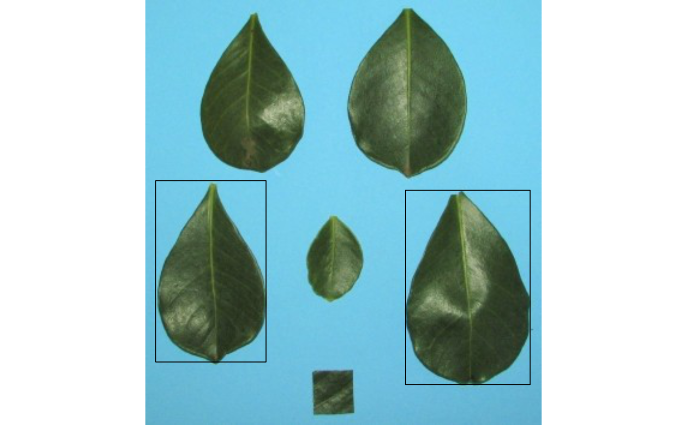

object_id()get the object identification in an image.object_coord()get the object coordinates and (optionally) draw a bounding rectangle around multiple objects in an image.object_contour()returns the coordinates (xandy) for the contours of each object in the image.object_isolate()isolates an object from an image.
Usage
object_coord(
img,
id = NULL,
index = "NB",
watershed = TRUE,
invert = FALSE,
filter = FALSE,
fill_hull = FALSE,
threshold = "Otsu",
edge = 2,
extension = NULL,
tolerance = NULL,
object_size = "medium",
parallel = FALSE,
workers = NULL,
plot = TRUE
)
object_contour(
img,
pattern = NULL,
dir_original = NULL,
center = FALSE,
index = "NB",
invert = FALSE,
filter = FALSE,
fill_hull = FALSE,
threshold = "Otsu",
watershed = TRUE,
extension = NULL,
tolerance = NULL,
object_size = "medium",
parallel = FALSE,
workers = NULL,
plot = TRUE,
verbose = TRUE
)
object_isolate(img, id = NULL, parallel = FALSE, workers = NULL, ...)
object_id(img, parallel = FALSE, workers = NULL, ...)Arguments
- img
An image of class
Imageor a list ofImageobjects.- id
For
object_coord(), a vector (or scalar) of objectidto compute the bounding rectangle. Object ids can be obtained withobject_id(). Setid = "all"to compute the coordinates for all objects in the image. Ifid = NULL(default) a bounding rectangle is drawn including all the objects.For
object_isolate(), a scalar that identifies the object to be extracted.
- index
The index to produce a binary image used to compute bounding rectangle coordinates. See
image_binary()for more details.- watershed
If
TRUE(default) performs watershed-based object detection. This will detect objects even when they are touching one other. IfFALSE, all pixels for each connected set of foreground pixels are set to a unique object. This is faster but is not able to segment touching objects.- invert
Inverts the binary image, if desired. Defaults to
FALSE.- filter
Performs median filtering in the binary image? See more at
image_filter(). Defaults toFALSE. Use a positive integer to define the size of the median filtering. Larger values are effective at removing noise, but adversely affect edges.- fill_hull
Fill holes in the objects? Defaults to
FALSE.- threshold
By default (
threshold = "Otsu"), a threshold value based on Otsu's method is used to reduce the grayscale image to a binary image. If a numeric value is informed, this value will be used as a threshold. Inform any non-numeric value different than "Otsu" to iteratively chosen the threshold based on a raster plot showing pixel intensity of the index.- edge
The number of pixels in the edge of the bounding rectangle. Defaults to
2.- extension, tolerance, object_size
Controls the watershed segmentation of objects in the image. See
analyze_objects()for more details.- parallel
Processes the images asynchronously (in parallel) in separate R sessions running in the background on the same machine. It may speed up the processing time when
imageis a list. The number of sections is set up to 50% of available cores.- workers
A positive numeric scalar or a function specifying the maximum number of parallel processes that can be active at the same time.
- plot
Shows the image with bounding rectangles? Defaults to
TRUE.- pattern
A pattern of file name used to identify images to be imported. For example, if
pattern = "im"all images in the current working directory that the name matches the pattern (e.g., img1.-, image1.-, im2.-) will be imported as a list. Providing any number as pattern (e.g.,pattern = "1") will select images that are named as 1.-, 2.-, and so on. An error will be returned if the pattern matches any file that is not supported (e.g., img1.pdf).- dir_original
The directory containing the original images. Defaults to
NULL, which means that the current working directory will be considered.- center
If
TRUEreturns the object contours centered on the origin.- verbose
If
TRUE(default) a summary is shown in the console.- ...
For
object_isolate(), further arguments passed on toobject_coord().For
object_id(), further arguments passed on toanalyze_objects().
Value
object_id()An image of class"Image"containing the object's identification.object_coord()A list with the coordinates for the bounding rectangles. Ifid = "all"or a numeric vector, a list with a vector of coordinates is returned.object_isolate()An image of class"Image"containing the isolated object.
Examples
# \donttest{
library(pliman)
img <- image_pliman("la_leaves.jpg")
# Get the object's (leaves) identification
object_id(img)
# Get the coordinates and draw a bounding rectangle around leaves 1 and 3
object_coord(img, id = c(1, 3))

# Isolate leaf 3
isolated <- object_isolate(img, id = 3)
plot(isolated)
 # }
# }